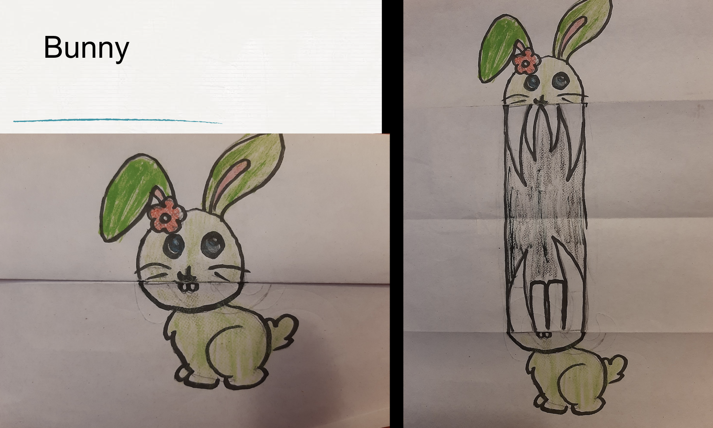
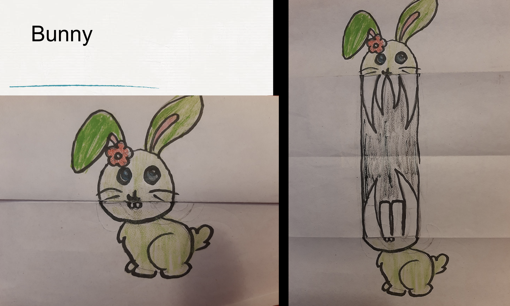
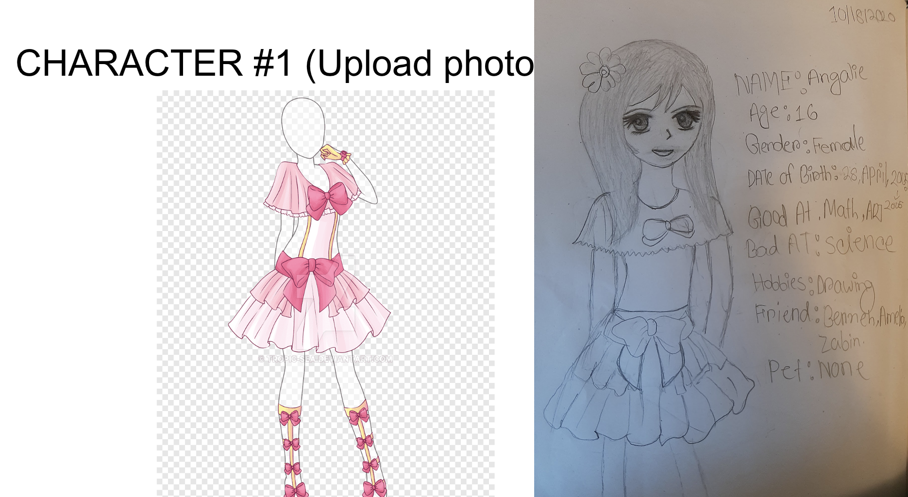

This is the visual design page
Home Page
About me Page
Visual Design Page

This picture is meaning ful to me because i cutted paper from any magazine or book covers and gather lot of different paper cut and add all of them up together to color the elephant to give it a unique color.

In this image i draw a girl and added a reaistic tree to give the feeling that she is reading a book under a reaslitc tree. This picture is important to me because i think this was creative.

The snowman snown above was homemade and being designed. This was important because we learned how to make a DIY snowman and made one snowman by ourself in a easy way.
 

This picture shown above was really important for me this is because we learned how to make creative drawings. Such as in the first picture it looks like a normal fish while in the second picture is transtion to completely different fish. Which gives surprising effects

This drawing was drawn by me.Which is why it is important for me because that was also the first time i
ever drawn any imposter.

i draw this girl inspired by the picture which is why this drawing is important for me because i tried my best to draw
the same exact dress on the girl i have drawn whcih was kind of challangining. But i tried my best and drawed the dress exactly like the first picture. Which is why i am proud of this picture.
Visual Design